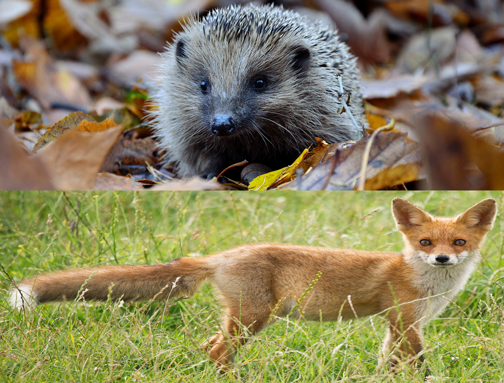

Geography
Climate
Ireland's climate is mostly influenced by the Atlantic Ocean. It is defined as a temperate oceanic climate. The country receives generally cool summers and mild winters. The average annual temperature is around 9°C. January and February are the coldest months of the year, while July and August are the warmest. Average rainfall varies between 800 and 2,800mm. Southwesterly winds from the Atlantic are most dominant, making rainfall figures highest in the west of the country. The annual number of days with more than 1mm of rain is between 150 and 200.
Flora and Fauna
Ireland has a small flora when compared to other European countries. This is mostly because ice-sheets covered much of Ireland until 13,000 years ago. By 10,000 years ago the climate had warmed up and a land-bridge may have connected Wales to the east coast of Ireland. This allowed plants and animals to cross until about 7,500 years ago when sea levels rose. Ireland owes its name of 'The Emerald Isle' to its mild winters and damp summers, which lead to a year-round greenness. One of Ireland's most famous botanical sites is the Burren in County Clare. Among the features of this limestone landscape is the combination of alpine plants with Mediterranean species. This is due to the unique mix of cool, wet summers which enables the alpines to survive and the mild winters which allows the frost-sensitive Mediterranean species to survive. On limestone rock or soils, ash forests will develop over time. Thin, acidic soils on the other hand will develop into woodland of sessile oak while deeper, richer soils give rise to forests dominated by pedunculate oak. Today, Ireland is one of the least forested lands in Europe. There are three major types of bog in Ireland. Fens are formed where the bog is fed from ground waters rich in nutrients. Raised bogs occupy the sites of former lake basins and often form on top of fens in the Irish midlands. Blanket bogs cover mountain tops or sloping ground, especially on the west coast. Of the thirty-five mammals present in Ireland, most are based on land. The most common are the red fox, hedgehog, stoat, badger and otter. Others like the Irish hare and pine marten are plentiful but not seen as often. There are a number of native and introduced species such as the grey squirrel. Several species of bat also live in Ireland. Over 400 bird species have been recorded in Ireland, although many are migratory.
Terrain
The island's waterways consist of lakes, canals and winding rivers. Sandy beaches fringe Ireland's shores and face onto many small islands in the Atlantic Ocean and the Irish Sea. Rugged mountain ranges dominate the skyline while cliff faces, crevices and underground caves are around the coast. The Carrauntoohil peak is the highest in Ireland, with a height of 1,038m.